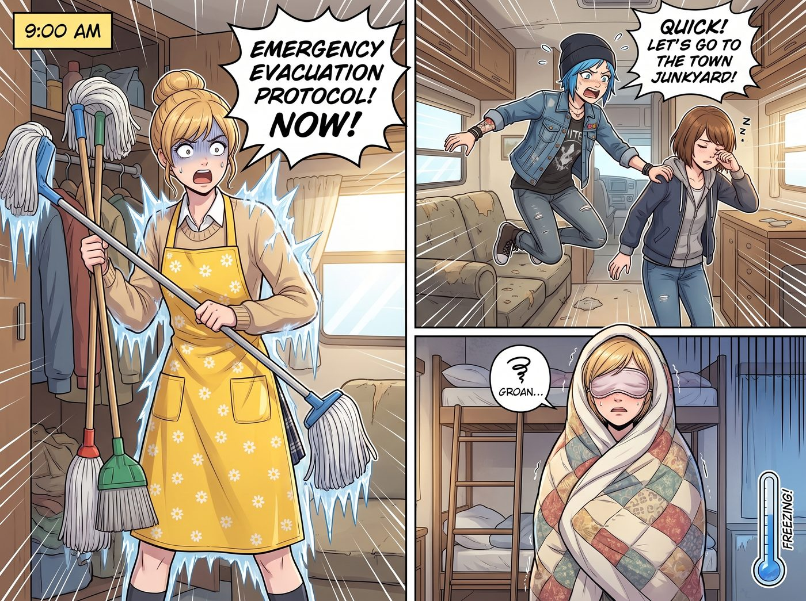
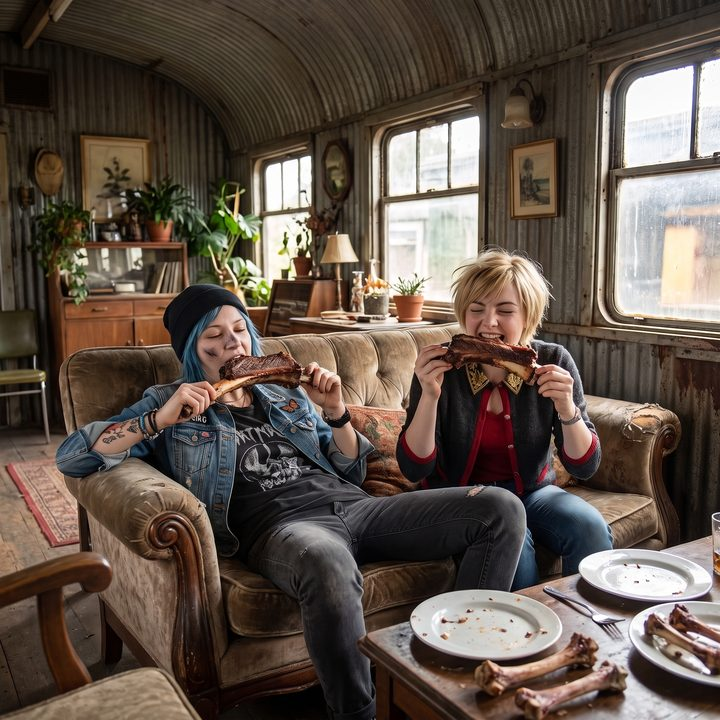

逃兵與大掃除


普吉特海灣（Puget Sound）的秋天，空氣中總是彌漫著一股清冽的松針香氣和微鹹的海風。這裡的空氣品質好得讓人想把它裝進罐子裡賣給矽谷的富豪。
但在二號車廂內部，情況就截然不同了。
因為這座鋼鐵堡壘裡住著一個把機油當護手霜的龐克太妹、一個隨地亂扔廢棄相紙的攝影師，以及一個每天要拆五個快遞盲盒的老錢名媛。
所以，二號車廂的最高物理法則之一就是：每兩週，必須進行一次史詩級的「大掃除（Deep Cleaning）」。
這天是星期六早上九點。
當 Kate 穿上那件印著小雛菊的專屬防水圍裙、並從儲藏室裡拿出三把拖把時……車廂裡的空氣瞬間凝固了。
「緊急撤離協議！現在！」
Chloe 像觸電一樣從沙發上彈起來，一把抓住剛睡醒還在揉眼睛的 Max，「快！我們去鎮上的廢車場！我突然想起來我的 V8 引擎還有一個螺絲沒鎖緊！」
同一時間，Victoria 用被子將自己裹成了一個密不透風的蠶寶寶，戴上真絲眼罩，發出了一聲極度造作的呻吟：「哦……我的偏頭痛犯了。我感覺我的大腦皮層正在抽搐。今天誰也別叫我，我是一個需要靜養的病人。」
「逃避大掃除」是這三個傢伙的傳統藝能。
但在今天，Kate 和 Lily 在前一晚已經召開了秘密會議，並達成了一項核心共識：本次抓捕行動，絕對不動用任何「道德勒索」（比如 Kate 的眼淚），也絕對不動用任何「行政制裁」（比如 Lily 的扣留預算或罰款單）。
她們要用最純粹的物理法則和生物本能，讓這三個廢柴乖乖就範。
第一戰區：猛禽皮卡大逃亡（消失的十毫米）
Chloe 拉著 Max 狂奔出車廂，以百米衝刺的速度衝向停在空地上的猛禽皮卡。
「只要上了車，我們就自由了！」Chloe 狂笑著拉開車門，將鑰匙插進孔裡，用力一轉。
「喀。」
引擎沒有發出任何轟鳴，甚至連啟動馬達的聲音都沒有。皮卡車像一塊巨大的廢鐵一樣死寂。
「怎麼回事？！」Chloe 瘋狂地轉動鑰匙。
這時，引擎蓋的另一側，緩緩探出了一個梳著一絲不苟低馬尾的腦袋。
Lily 穿著米色針織衫，雙手戴著絕緣橡膠手套，手裡平靜地拿著一把小小的套筒扳手。
「早上好，Chloe 學姐，Max 學姐。」Lily 推了推圓框眼鏡，語氣軟糯卻令人絕望。
「妳……妳對我的車做了什麼？！」Chloe 跳下車，衝到引擎蓋前。
「我只是鬆開了電瓶的負極接頭。」Lily 舉起另一隻手，掌心裡躺著一顆小小的螺帽，「還有，借走了這個。」
Chloe 愣了一秒，然後嗤笑出聲：「就這？老娘三十秒就能接回去！」
她轉身衝回車廂，一把拉開自己的工具箱，開始翻找。
一分鐘後。
「十毫米……十毫米呢？！」Chloe 把整個工具箱倒在地上，套筒、扳手、螺絲起子滾了一地，「老娘那盒十毫米的螺帽呢？！還有十毫米的套筒呢？！為什麼全世界什麼尺寸都有，就是永遠找不到十毫米？！」
「因為上週整理工具牆的時候，」Lily 平靜地說，「所有十毫米的零件，都被收進了 B-3 號抽屜。」
「那把抽屜給我打開！」
「抽屜的鑰匙在 Kate 學姐那裡。」Lily 乖巧地補充，「她說，大掃除結束之後才能還給您。」
Chloe 張著嘴，看了看那一地的工具，又看了看 Lily 手裡那顆小小的螺帽，整個人僵在原地。
「車子毫髮無傷，學姐。」Lily 把螺帽收回口袋，「我沒有拆任何零件，也沒有用任何表格。只是用了您自己的工具牆。」
Lily 轉過身，指了指車廂門口放著的兩把拖把：「或者進行一些有益身心健康的室內有氧運動。」
Max 默默地從副駕駛座上下來，拍了拍 Chloe 的肩膀，無奈地嘆了口氣：「認命吧，Chloe。她甚至沒有用表格，她用的是妳的十毫米。」
第二戰區：名媛的賴床防禦（自己簽的排程表）
解決了逃兵，Lily 走回車廂，來到了 Victoria 緊閉的房門前。
Victoria 依然裹在被子裡裝死。她心裡盤算著，只要自己不出去，難道這兩個乖乖女還能破門而入把她從床上拖下來不成？
Lily 沒有敲門。
她只是看了一眼手錶，然後走到冰箱前，看了一眼貼在門上的那張紙。
那是上個月家庭會議通過的《大掃除日作業排程》。第三條寫著：大掃除當天上午九點至十一點，臥室車廂暫停暖氣，所有窗戶打開通風。表決結果五比零，最底下簽著五個人的名字，其中一個是龍飛鳳舞的「V. Chase」。
九點整。Lily 走到尾節車廂，按照排程，關掉了暖氣，打開了 Victoria 房間的窗戶。
十月的普吉特海灣，清晨的海風只有攝氏十二度，裹著濕氣，從窗縫裡一股一股地灌了進去。
「啊啊啊啊——凍死我了！」
不到十分鐘，Victoria 發出一聲淒厲的尖叫，從被窩裡彈了起來。她那件昂貴的真絲睡衣在冷風裡狂舞，髮型瞬間變成了雞窩。
「是誰！是誰開了我的窗！」她抱著肩膀衝出房門，正好撞上站在走廊上的 Lily。
Lily 沒有說話，只是把手裡那張排程表遞到她面前，指了指第三條，又指了指最底下那個龍飛鳳舞的簽名。
Victoria 盯著自己的簽名，嘴巴張了又合，合了又張。
「……我那天是喝了兩杯香檳才簽的。」
「合約效力不受簽署人當天的酒精攝取量影響，學姐。」Lily 乖巧地說，「客廳有燒柴爐，很暖和。旁邊還有一台需要人體動力驅動的戴森吸塵器。」
五分鐘後，Victoria 裹著一件厚厚的羽絨外套，哆哆嗦嗦地走出了房間，一把抓起客廳角落裡的吸塵器，咬牙切齒地看著 Lily：
「妳這個沒有感情的排程執行機器！我吸！我吸還不行嗎！」
終極殺招：天使的陽謀（無法拒絕的肋排）
當垂頭喪氣的 Chloe、Max，以及裹著羽絨衣的 Victoria，手裡分別拿著拖把、抹布和吸塵器，像三個戰俘一樣站在客廳中央時，廚房裡傳來了動靜。
Kate 沒有用那雙水汪汪的、充滿道德譴責的大眼睛看著她們。
她甚至沒有要求她們幹活。
她只是背對著她們，打開了烤箱。
一瞬間，一股足以讓任何碳基生物大腦短路的香氣，如同核爆一般席捲了整個車廂。
那是經過低溫慢烤十二個小時、裹滿了濃郁煙燻蘋果木醬汁的 德州帶骨牛肋排（Beef Ribs），以及一個剛剛出爐、表皮金黃酥脆、散發著肉桂和黃油香氣的 法式焦糖蘋果派。
Chloe 的喉結不受控制地上下滾動了一下。
Victoria 甚至忘記了寒冷，眼睛死死盯著那塊還在滋滋冒油的肋排。
Kate 將那盤碩大的牛肋排端到中島台上，然後優雅地摘下隔熱手套，轉過身，臉上帶著那種屬於大天使長般的、絕對溫柔卻不容置疑的微笑。
「姑娘們，午餐將在兩小時後準時供應。」
Kate 拿起一把鋒利的切肉刀，輕輕在肋排上劃了一刀，鮮嫩的肉汁瞬間湧了出來。她微笑著看著三個已經開始流口水的廢柴，語氣輕柔：
「不過，今天的肋排，只留給有一起打掃的人喔。大家一起把家弄乾淨了，吃起來才會最香呀。
沒有打掃，就沒有肋排。我不會生氣，也不會難過。妳們完全可以選擇繼續休息，我會把妳們的份量放進冰箱裡，明天熱成剩菜給妳們吃。」
沒有道德綁架，沒有「我這麼辛苦妳們怎麼不幫忙」的哭訴。
她甚至不需要講任何道理。那盤肋排本身，就是全世界最有說服力的理由：外層烤出了一圈焦黑酥脆的硬殼，一刀切下去，肉就自己從骨頭上滑了下來；蘋果木的煙燻甜香混著黑胡椒，從中島台一路鑽進每個人的鼻腔。她只是把它放在那裡。
「去妳的偏頭痛！」
Victoria 猛地脫下羽絨外套，按下了戴森吸塵器的最高檔位，像一個狂戰士一樣衝向了地毯上的灰塵，「這塊肋排是我應得的！誰也別想讓我吃隔夜剩菜！」
「Max！把那桶水提過來！老娘今天要把這塊地板拖得能當鏡子照！」Chloe 怒吼著，將拖把舞出了少林棍法的氣勢。
連 Max 都挽起了袖子，拿著玻璃清潔劑，開始對著車廂的車窗瘋狂噴灑。
Lily 站在一旁，看著這三個突然被激發了無限潛能的勞動力，推了推圓框眼鏡，拿出筆記本默默記錄下了這一切。
而 Kate 則轉過身，繼續切著她的蘋果派，嘴角勾起一抹深藏功與名的甜美微笑。
兩個小時後，大掃除完美結束。
二號車廂煥然一新，空氣中充滿了檸檬清潔劑和烤肉的混合香氣。
五個人癱在沙發上，毫無形象地啃著巨大的帶骨牛肋排。
Max 舉起油乎乎的手，按下了放在桌上的寶麗來相機快門。
鏡頭裡，Chloe 的臉上蹭了一塊灰，Victoria 的頭髮亂糟糟的，但每個人都抱著一塊肉啃得滿臉幸福。
「喀嚓。」
照片吐出，Max 在背面寫下：
『規則第 96 條：在二號車廂，逃避勞動是人類的本能。但一顆消失的十毫米螺帽、一張自己簽過名的排程表，以及一塊完美的烤肋排，是凌駕於所有本能之上的終極真理。千萬不要惹一個會用扳手的行政，和一個只需要打開烤箱的天使。』